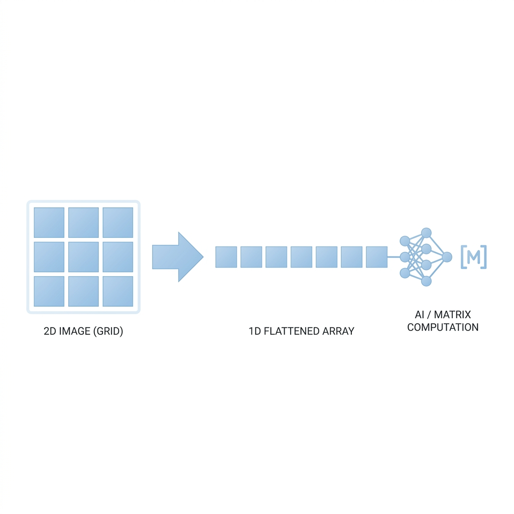

🦜 Numpy로 데이터 가공
1. 다차원 배열 (N-Dimensional Array)
"Numpy의 핵심은 데이터를 격자 모양의 배열로 아주 빠르고 효율적으로 처리하는 것입니다! 차원(Dimension)에 따라 부르는 이름이 다릅니다."
| 차원 (Dimension) | 이름 | 예시 | 파이썬 코드 |
|---|---|---|---|
| 0D (Scalar) | 단일 값 (점) | 5 |
np.array(5) |
| 1D (Vector) | 선 형태 (1줄) | [1, 2, 3] |
np.array([1, 2, 3]) |
| 2D (Matrix) | 면 형태 (행/열 표) | [[1, 2], [3, 4]] |
np.array([[1, 2], [3, 4]]) |
| 3D (Tensor) | 입체 형태 (큐브) | [[[1, 2]], [[3, 4]]] |
np.array([[[1, 2]], [[3, 4]]]) |
2. Numpy 인덱싱 (Indexing)
각 차원의 위치(인덱스)를 사용해서 원하는 데이터를 콕 집어 가져오는 방법입니다. 행(Row)과 열(Column) 순서대로 접근하면 됩니다!
import numpy as np # 2차원 행렬 생성 (2행 3열) matrix = np.array([ [10, 20, 30], [40, 50, 60] ]) # 1행 2열 데이터 가져오기 (인덱스는 0부터 시작하므로 0행, 1열) val = matrix[0, 1] print(val) # 출력: 20
✨ 조건으로 데이터 고르기 (Boolean Indexing)
조건식을 주어 원하는 데이터만 쏙쏙 골라내는 아주 강력한 기능입니다! 데이터를 분석할 때 불필요한 노이즈를 제거하거나, 특정 조건에 맞는 데이터만 걸러낼 때 정말 많이 쓰입니다!
import numpy as np # 나이 데이터가 담긴 배열 ages = np.array([15, 22, 18, 30, 12, 25]) # 20살 이상인 데이터만 걸러내기 adults = ages[ages >= 20] print(adults) # 출력: [22 30 25]
3. Shape 가공 (Shape Manipulation)
데이터 분석과 AI 모델 설계 시 데이터의 구조(행과 열의 개수)인 shape를 변형하는 일이 정말 많습니다!
.shape: 현재 배열이 몇 행 몇 열인지 확인하는 속성.reshape(): 데이터 내용은 유지한 채 배열의 모양(차원)을 바꾸는 함수.flatten(): 다차원 배열을 1차원(1줄)으로 일렬로 쫙 펴주는 함수
# 1차원 배열(원소 6개)을 2행 3열의 2차원 배열로 변경 arr_1d = np.array([1, 2, 3, 4, 5, 6]) arr_2d = arr_1d.reshape(2, 3) print(arr_2d.shape) # 출력: (2, 3) # 다시 1차원으로 납작하게 펴기 flat_arr = arr_2d.flatten() print(flat_arr) # 출력: [1 2 3 4 5 6]
4. 행렬 곱 (Matrix Multiplication)
AI 딥러닝 모델의 뼈대를 이루는 핵심 연산이 바로 행렬 곱(Dot Product)입니다! 여러 차원의 데이터를 한꺼번에 곱하고 더해서(가중치 연산) 예측값을 뽑아낼 때 무조건 쓰이는 기능입니다!
import numpy as np # 입력 데이터 (1행 2열) X = np.array([[1.5, 2.0]]) # 모델의 가중치 (2행 2열) W = np.array([ [0.5, -0.2], [0.1, 0.8] ]) # 행렬 곱셈 연산 (np.dot 활용) output = np.dot(X, W) print(output) # 출력: [[0.95 1.3 ]]
위 코드처럼 np.dot()이나 @ 기호를 사용하면 복잡한 수식 없이 한 줄로 깔끔하게 행렬 곱 연산을 해낼 수 있습니다!
🔥 [참고사항] Shape 가공과 행렬 곱이 융합된 실전 RNN 클래스
시계열 데이터(예: 배터리 소성로 1분 단위 온도, 압력 센서값)를 예측하는 RNN(순환 신경망) 모델을 Numpy 클래스로 직접 짜봅시다! Shape 구조 파악과 행렬 곱 연산이 딥러닝 내부에서 어떻게 쓰이는지 한눈에 볼 수 있습니다.
class SimpleRNN: def __init__(self, input_size, hidden_size): # 모델 가중치 초기화 self.W_xh = np.random.randn(input_size, hidden_size) # Shape: (3, 5) self.W_hh = np.random.randn(hidden_size, hidden_size) # Shape: (5, 5) def forward(self, inputs): # inputs의 Shape: (batch_size=2, time_steps=4, input_size=3) batch_size, time_steps, input_size = inputs.shape # 초기 은닉 상태 생성 -> Shape: (2, 5) hidden_state = np.zeros((batch_size, self.W_hh.shape[0])) for t in range(time_steps): # 1. Shape 가공: 특정 시간(t)의 데이터만 슬라이싱 # 3차원(2, 4, 3) 데이터가 2차원(2, 3)으로 변환됨! x_t = inputs[:, t, :] # Shape: (2, 3) # 2. 행렬 곱(Matrix Multiplication) 연산 # np.dot( (2,3), (3,5) ) -> (2, 5) # np.dot( (2,5), (5,5) ) -> (2, 5) hidden_state = np.dot(x_t, self.W_xh) + np.dot(hidden_state, self.W_hh) # 활성화 함수 적용 -> Shape: (2, 5) 그대로 유지 hidden_state = np.tanh(hidden_state) return hidden_state # 테스트 실행 rnn_model = SimpleRNN(input_size=3, hidden_size=5) # 가상 시계열 데이터 생성 (배치크기 2, 4초 동안 측정, 센서특성 3개) # 입력 데이터 Shape: (2, 4, 3) sensor_data = np.random.randn(2, 4, 3) # 결과물 Shape: (2, 5) final_state = rnn_model.forward(sensor_data)
🤖 포스코퓨처엠 실무: 수치 연산과 AI 데이터 가공
포스코퓨처엠 현장에서는 Numpy의 다차원 배열 변환과 초고속 행렬 연산이 다음과 같이 활용됩니다.
-
[FullCell평가섹션] 대규모 배터리 충·방전 데이터 고속 연산:
배터리 사이클 테스트 시 쏟아지는 방대한 성능 데이터를 Numpy 행렬(Matrix)로 변환하여 처리하면, 반복문을 돌릴 때보다 수십 배 빠르게 성능 곡선(Degradation Curve) 데이터 포인트를 추출해낼 수 있습니다.
-
[디지털혁신그룹] 공정 AI 모델용 3차원 텐서(Tensor) 변환:
양극재/음극재 생산 공정의 온도, 압력 센서 데이터를 RNN이나 LSTM 딥러닝 모델에 학습시키려면 시계열 데이터의 형태(Shape)를 3차원 텐서(배치 크기, 타임 스텝, 센서 개수)로 변환해야 합니다. 이때reshape()를 통해 모델에 최적화된 형태로 데이터를 가공합니다.
-
[내화물정비섹션] 노후 설비 예지보전(PdM) 입력 데이터 평탄화:
수천 개 내화물 설비의 노후화 상태를 점검하는 비전(Vision) 이미지 데이터와 진동 센서 데이터를 AI가 판별할 수 있도록 다차원 2D/3D 배열을flatten()을 이용해 1차원(1D)으로 일렬로 펴서 인공신경망의 입력 데이터로 제공합니다.